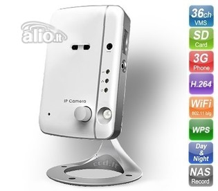

Welcome to vaizdo-kameros
Vaizdo stebėjimo kameros, sistemos | STEBKAM
2020.10.27 11:24
Registruotis Prisijungimas Prisijungimas Palyginti prekes (0) Prekių krepšelis Krepšelis tuščias. Viso prekių už 0 00 € su PVM Peržiūrėti krepšelį Iki nemokamo pristatymo liko 100 00 € su PVM Pristatysime nemokamai! Konsultuojame
nemokamai Garantija visoms
mūsų prekėms Pristatymas
visoje lietuvoje Mokėkite grynais,
kai gausite prekes VilniuJE +370 645 42336 kaune +370 671 76059 RAŠYKITE info@stebkam.lt Vaizdo stebėjimo sistemos ir kameros Namams Verslui IP vaizdo stebėjimo sistemos WiFi vaizdo stebėjimo kameros 4G kameros Hikvision vaizdo stebėjimo sistemos Dahua vaizdo stebėjimo sistemos Termovizorinės kameros HD-TVI TURBO vaizdo stebėjimo sistemos HD-CVI vaizdo stebėjimo sistemos Transporto vaizdo stebėjimo sistemos Medžiotojų kameros Analoginės vaizdo stebėjimo kameros Axis vaizdo stebėjimo kameros Mobotix vaizdo stebėjimo kameros Priedai Instrukcijos ir aplikacijos Slaptos kameros Autoregistratoriai Veiksmo kameros ĮRANGOS NUOMA SMART kameros NAUJIENA! Išmanūs įrenginiai Vaizdo telefonspynės/ Domofonai Išmanieji durų skambučiai Vaizdo telefonspynių komplektai Hikvision vaizdo telefonspynės Dahua vaizdo telefonspynės Audio telefonspynės Priedai Apsaugos ir priešgaisrinės sistemos Apsaugos sistemų komplektai Autonominiai dūmų detektoriai Belaidės AJAX apsaugos sistemos Belaidė įranga Laidinė įranga Radijobanginės sistemos GSM įranga Perimetro apsauga Eldes produkcija Adresinės priešgaisrinės sistemos Konvecinės priešgaisrinės sistemos Praėjimo kontrolė/ Darbo laiko apskaita Hikvision įeigos kontrolė ROGER įėjimo kontrolė PARADOX įėjimo kontrolė Autonominė atstumo įranga FoxSec Elektromagnetinės spynos Elektromagnetinės sklendės Išėjimo mygtukai Kortelės ir pakabukai Kita įranga Priedai ir instaliacinės medžiagos Maitinimas Atminties laikmenos (HDD/Micro SD) Akumuliatoriai / UPS Komutatoriai, signalo perdavimas Muliažai Kabeliai Mikrofonai Antgaliai laidams IR prožektoriai Monitoriai Maršrutizatoriai, POE šakotuvai Tvirtinimo elementai Informaciniai ženklai Kištukai ir priedai Komutacinės panelės Tinklo spintos Stebėjimo kamerų akcijos Kontaktai Vaizdo stebėjimo sistemos ir kameros Namams Verslui IP vaizdo stebėjimo sistemos WiFi vaizdo stebėjimo kameros 4G kameros Hikvision vaizdo stebėjimo sistemos Dahua vaizdo stebėjimo sistemos Termovizorinės kameros HD-TVI TURBO vaizdo stebėjimo sistemos HD-CVI vaizdo stebėjimo sistemos Transporto vaizdo stebėjimo sistemos Medžiotojų kameros Analoginės vaizdo stebėjimo kameros Axis vaizdo stebėjimo kameros Mobotix vaizdo stebėjimo kameros Priedai Instrukcijos ir aplikacijos Slaptos kameros Autoregistratoriai Veiksmo kameros ĮRANGOS NUOMA SMART kameros NAUJIENA! Išmanūs įrenginiai Vaizdo telefonspynės/ Domofonai Išmanieji durų skambučiai Vaizdo telefonspynių komplektai Hikvision vaizdo telefonspynės Dahua vaizdo telefonspynės Audio telefonspynės Priedai Apsaugos ir priešgaisrinės sistemos Apsaugos sistemų komplektai Autonominiai dūmų detektoriai Belaidės AJAX apsaugos sistemos Belaidė įranga Laidinė įranga Radijobanginės sistemos GSM įranga Perimetro apsauga Eldes produkcija Adresinės priešgaisrinės sistemos Konvecinės priešgaisrinės sistemos Praėjimo kontrolė/ Darbo laiko apskaita Hikvision įeigos kontrolė ROGER įėjimo kontrolė PARADOX įėjimo kontrolė Autonominė atstumo įranga FoxSec Elektromagnetinės spynos Elektromagnetinės sklendės Išėjimo mygtukai Kortelės ir pakabukai Kita įranga Priedai ir instaliacinės medžiagos Maitinimas Atminties laikmenos (HDD/Micro SD) Akumuliatoriai / UPS Komutatoriai, signalo perdavimas Muliažai Kabeliai Mikrofonai Antgaliai laidams IR prožektoriai Monitoriai Maršrutizatoriai, POE šakotuvai Tvirtinimo elementai Informaciniai ženklai Kištukai ir priedai Komutacinės panelės Tinklo spintos Stebėjimo kamerų akcijos Kontaktai VAIZDO STEBĖJIMO KAMEROS Vaizdo stebėjimo sistemos IP vaizdo stebėjimo kameros IP vaizdo stebėjimo kamerų komplektai WiFi Kameros daugiau
produktų Kaip išsirinkti Specialisto iškvietimas apžiūrai Instaliavimo darbai Instrukcijos Verslui Vaizdo stebėjimo
ir apsaugos sistemos lauko STEBĖJIMO KAMEROS sistemos
parduotuvėms ir kavinėms STEBĖJIMO
sistemos
biurams daugiau
produktų Namams Vaizdo stebėjimo
ir apsaugos sistemos STEBĖJIMO
KAMEROS
Teritorijai
aplink namą Vaizdo telefonspynės
/ Domofonai STEBĖJIMO
KAMEROS
Auklėms ir
gyvūnams daugiau
produktų Apsaugos sistemos Eldes
apsaugos
sistemos Belaidės apsaugos
sistemos Priešgaisrinės
apsaugos
sistemos daugiau
produktų Hikvision vaizdo
stebėjimo sistemos HIkvision kameros Hikvision vaizdo
telefonspynės Hikvision įrašymo
įrenginiai Kita HIkvision
įranga Vaizdo stebėjimo kameros STEBKAM – vaizdo stebėjimo, apsaugos ir išmaniųjų sprendimų profesionalai. Kodėl STEBKAM – geriausias pasirinkimasJums? Jums pasiūlysime pažangius elektroninės saugos sprendimus; didžiuojamės galėdami atstovauti visame pasaulyje žinomiems ir vertinamiems gamintojams, pavyzdžiui, , „Hikvision“, „Dahua“, „Mobotix“, „DSC“, Axis“, „Paradox“, „Eldes“, „Bentel“, „QuailDigital“ ir kt.; išmaniaisiais vaizdo stebėjimo, saugos ir kitais sprendimais aprūpiname įvairų klientų spektrą: nuo individualių namų iki didžiųjų prekybos centrų, logistikos sandėlių ir kt.; pasiūlysime geriausią sprendimą už priimtiną kainą; teikiame platų paslaugų spektrą: vaizdo stebėjimo sistemų įrengimas, apsaugos sistemų, priešgaisrinių sistemų, automobilių numerių nuskaitymo sistemų, praėjimo kontrolės sistemų montavimas, pastatų automatikos, darbuotojų pasikalbėjimo ir foninio įgarsinimo sistemų, kompiuterinio tinklo įrengimas ir kt. Platus asortimentas skirtingiems poreikiams
Mūsų asortimente rinkitės saugos kameras verslui ar namams: su judesio fiksavimu, su vaizdo įrašymo funkcija, slaptas kameras, mobilias kameras, bevieles WiFi kameras, naktines kameras, mini ar didesnes, valdomas nuotoliniu būdu ir kitas.
Ieškantiems sprendimų namams pasiūlysime platų lauke montuojamų saugos kamerų / komplektų spektrą teritorijai aplink namus stebėti, daugiabučių kiemams, stovėjimo aikštelėms. Taip pat užtikrinsime patikimą namų vidaus saugą.
Sodyboms, garažams pasiūlysime nesudėtingai montuojamas bevieles lauko ir vidaus vaizdo stebėjimo sistemas. Jei jau turite vaizdo stebėjimo sistemą, bet ji pasenusi, neatitinka keliamų reikalavimų, pasiūlysime sprendimą, leisiantį pakeisti kameras moderniomis, drauge išlaikant esamą kabelių infrastruktūrą. Išmanūs sprendimai Jūsų namams – stebėkite namus telefone iš bet kurios pasaulio vietos!
Ieškote vaizdo stebėjimo sistemos savo verslui? Mūsų asortimente rasite platų vaizdo stebėjimo kamerų lauko teritorijoms ir patalpoms spektrą: apsaugos sistemas nuo įsilaužimų, gaisro, numerių atpažinimo sistemas, darbuotojų pasikalbėjimo sistemas, stebėjimo kameras, skirtas stebėti darbuotojus, įrangos darbą, ir kt. Jei turima saugos sistema neatitinka lūkesčių, pasiūlysime optimalius sprendimus jai atnaujinti.
Taip pat siūlome išmanias vaizdo telefonspynes, įeigos kontrolės sistemas ir jų montavimą, profesionalias automobilines vaizdo stebėjimo sistemas.
Kas svarbu renkantis vaizdo stebėjimo sistemą/ kamerą?Nusprendę pasirūpinti savo namų, biuro, lauko teritorijos, turto saugumu / stebėjimu pirmiausia turėsite nuspręsti, kokio tipo kamerą rinktis. Šiuo metu rinkoje populiariausios IP vaizdo stebėjimo kameros, garantuojančios kokybišką vaizdą ir efektyvų signalo perdavimą.
Sumontavus šias kameras vaizdas į įrašymo įrenginį perduodamas LAN / internetiniu kabeliu. Jei norite seną vaizdo kamerą atnaujinti, bet palikti išvedžiotus koaksialinius kabelius, geriausias pasirinkimas – kokybiškos ANALOG HD / Hikvision Turbo HD, Dahua HD-CVI kameros. Pastarųjų raiška ir vaizdo kokybė prilyginama IP kameroms, bet signalas perduodamas senos technologijos koaksialiniu kabeliu.
Pageidaujate vaizdo stebėjimo kameras įrengti ten, kur nėra galimybės išvedžioti kabelius? Sprendimas – geros WiFi kameros, vaizdo signalą perduodančios bevieliu WiFi ryšiu.
Jeigu vaizdą norėsite stebėti internetu, tai padaryti galėsite su visomis aukščiau išvardytomis sistemomis / kameromis.
Kur įsigyti mūsų vaizdo stebėjimo kamerų?Norintys aukštos kokybės elektroninės saugos sprendimų prekes rinktis gali www.stebkam.lt, taip pat visada esate laukiami prekybos salone Vilniuje, J. Kubiliaus gatvėje 16. Internetu užsakytas prekes pigiai pristatome į Vilnių, Kauną, Klaipėdą, Panevėžį, Šiaulius, Marijampolę, Alytų ir kitus miestus Lietuvoje.
Esant poreikiui pasirinktą vaizdo stebėjimo, apsaugos ar kitą sistemą sumontuosime bet kuriame Lietuvos mieste.
Taip pat siūlome nuotolinę pagalbą konfigūruojant vaizdo stebėjimo ir kitas sistemas.
MES REKOMENDUOJAME
Hibridinis įrašymo įrenginys 8kam. Į palyginimą Iš palyginimo Palyginti (0)